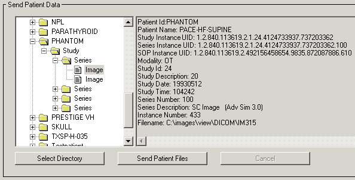

Open the DICOM Network Services utility by entering the following at the IDL command prompt if needed:
DICOMEX_NET
Click on the Storage SCU tab.
Note: This tab is not available if the DICOM Network Services utility is started with the SYSTEM keyword.
- Send data related to the DICOM patient hierarchy . In the Send Patient Data area, click the Select Directory button and select a directory containing DICOM files. Click in the Tree Navigation area and select a patient, study, or series to send all related images, or select a single image. Details about the selected item is displayed to the right of the Tree Navigation area. Click the Send Patient Files button to send the image(s) to the remote machine. Operation status is displayed in the Status area. The following figure shows an image selected in the Tree Navigation area.
|
 |
- Send a selected file . In the Send File(s) area, click the Browse/Send Files button. Locate the file or files you want to send. Select multiple files by Ctrl - or Shift -clicking. Click Open to send the file(s). Operation status is reported in the Status area, an excerpt of which is shown here.
|
|